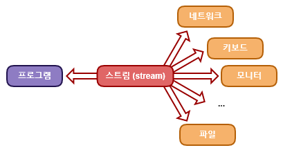
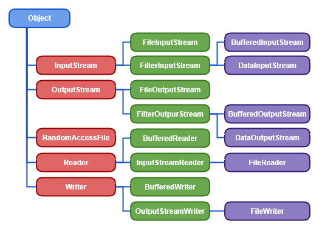

스트림 (stream)
I/O(입출력, Input/Output)는
컴퓨터 내부 또는 외부 장치와 프로그램간의 데이터를 주고받는 것을 말합니다.
자바에서 입출력을 수행하려면, 즉 데이터를 주고 받기 위해서는 두 대상을 연결하고 데이터를 전송 할 수 있는 스트림(stream)을 사용해야 합니다.
스트림(stream)은 데이터를 운반하는데 사용되는 연결통로입니다.
스트림은 연속적인 데이터의 흐름을 물에 비유해서 붙여진 이름입니다.
물이 흐르는 수도관에 비유하여 물이 한쪽 방향으로만 흐르는 것과 같이
스트림은 단방향통신만 가능하기 때문에 하나의 스트림으로 입력과 출력을 동시에 할 수 없습니다. 그래서
입력과 출력을 동시에 수행하기 위해서는 입력을 위한
입력스트림(Input stream)과 출력을 위한 출력스트림(output stream) 각각의 스트림이 필요합니다.
Stream
스트림은 먼저 보낸 데이터를 먼저 받게 되어있으며 중간에 건너뜀 업싱 연속적으로 데이터를 주고 받습니다. 우리가 이전에 배운 큐(queue)와 같은 FIFO(First In First Out)구조를 생각하면 이해하기 쉽습니다.
Stream class
- Stream으로 끝나는 클래스 : byte 단위 IO 클래스
- InputStream으로 끝나는 클래스 : byte 단위로 입력받는 클래스
- OutputStream으로 끝나는 클래스 : byte 단위로 출력받는 클래스
- Reader로 끝나는 클래스 : 문자 단위로 입력받는 클래스
- Writer로 끝나는 클래스 : 문자 단위로 출력받는 클래스
- File로 시작할 경우 : 파일로부터 입력이나 출력하는 클래스
- ByteArray로 시작할 경우 : 입력클래스의 경우 ByteArray로 읽어들이고, 출력클래스의 경우 클래스 내부의 자료구조에 출력한 후 출력된 결과를 ByteArray로 리턴
- CharArray로 시작할 경우 : 입력클래스의 경우 CharArray로 읽어들이고, 출력클래스의 경우 클래스 내부의 자료구조에 출력한 후 출력된 결과를 CharArray로 리턴
- Filter로 시작할 경우 : Filter로 시작하는 IO 클래스는 직접 사용하는 것보다는 상속을 받아 사용하며 사용자가 원하는 내용만 필터링할 목적으로 사용
- Data로 시작할 경우 : 다양한 데이터 형식을 입출력할 목적으로 사용됩니다. 특히 기본형 값(int, float, double)을 출력하는데 유리
- Buffered로 시작할 경우 : 프로그램에서 Buffer라는 말은 메모리를 의미합니다. 입출력 시에 병목현상을 줄이고 싶을 경우 사용
- RandomAccessFile : 입력이나 출력을 모두 할 수 있는 클래스로써 파일에서의 임의 위치의 내용을 읽거나 쓸 수 있는 기능을 제공
* IO 관련 클래스는 생성자가 중요한 역할을 합니다. 생성자에 어떤 것을 지정했느냐에 따라서 읽어 들여야할 대상과 써야 할 대상이 틀려 지기 때문입니다. (메소드도 마찬가지로 메소드에 전달되는 인자가 경우에 따라서 읽어들이는(또는 쓰여지는) 변수가 되고 반환되는 값은 읽어들인(씌여진) 바이트수가 되는 경우가 있습니다.)